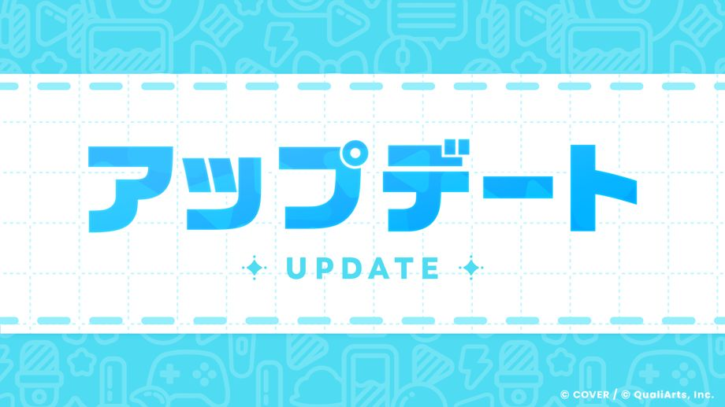

ご利用いただきありがとうございます。
「ホロライブドリームス」運営チームです。
2026-08-28 11:00:00に、Ver.1.1.0アップデートを行いました。
新ミニゲーム「くらやみチェイス」が開幕！

新ミニゲーム「くらやみチェイス」が開幕！
くらやみチェイスは、逃げるいたずら組と捕まえるパトロール隊の2チームに分かれて対戦するミニゲームです。
詳細は［お知らせ］→［一覧］→［新ミニゲーム「くらやみチェイス」開幕！］をご覧ください。
その他アップデート
◆各種アイテムの獲得量の改善
皆様から日頃いただいているご意見、ご要望をもとに、レッドダイヤや各種育成素材などアイテムの獲得量を見直しました。
- 2026-09-01 05:00:00 以降開催のミッションパスで、フリーパスに最大1000個のレッドダイヤが追加されるようになります。
- メンバーの育成素材を獲得しやすくなるように、ライブで獲得できる育成素材の報酬量を上方調整しました。
-
- レッスンPt、ホロゴールドの獲得量を増加
- 各種ピースの獲得量(抽選確率)を増加
- 各種クリスタルの獲得量(抽選確率)を大幅に増加
- ホロステッカー交換と特別ホロステッカー交換にライブブーストを追加しました。
- 特別ホロステッカー交換のホロリウムの月の交換可能数を5→20に調整しました。
- メガスフィアコインを獲得しやすくなるように、2026-08-29 12:00:00開催のイベントより、イベント交換所でメガスフィアコインを獲得できるよう調整しました。
◆ライブのマルチプレイの改善
-
難易度設定画面で、難易度を決定後もキャンセルができるようになりました。
キャンセルは、制限時間内かつ参加者全員が難易度を選んで準備完了になるまで可能です。 - MODE選択画面の「AUTOを含む」と難易度設定画面の「AUTO」設定が、最後に設定した内容を引き継ぐようになりました。
◆クリエイト譜面の改善
- 自分で制作したクリエイト譜面や、他の人が制作したお気に入りのクリエイト譜面の情報を、画像で保存したりシェア出来るようになりました。
- クリエイト譜面の制作者から、その譜面制作者が制作している譜面一覧画面に遷移できるようになりました。
- ブロックしているプレイヤーのクリエイト譜面が表示されなくなりました。
- 装飾ノーツツールを長押しでカラーパレットが開くようになりました。
- 警告、違反マーク表示を改善し、さらに該当箇所への移動がしやすくなりました。
- サムネイル設定を行う前に、ノーツの速さを設定できるようになりました。
- サムネイル設定画面にて、撮影したサムネイルを削除できるようになりました。
- お試しプレイ設定画面でライブオプションを設定できるようになりました。
- エディター画面の横幅を画面サイズに合わせて動的に変更できるようになりました。
- 不正な譜面のチェックを強化しました。
- クリエイト譜面作成中にオーディオスペクトラムが表示されるようになりました（Steam版のみ）。
◆その他アップデート
- 選べるガチャの「ピックアップメンバーを選ぼう」で、フィルターやソートの設定がガチャごとに個別で保存されるようになりました。
- ホロワークで活動完了時の通知が、短時間に連続して表示されないようになりました。
- メガサーキットで1位のプレイヤーがゴールしてから終了するまでの制限時間を緩和しました。
-
iOSの端末でGameCenterの連携が可能になりました。
Ver1.1.0以降のアプリをはじめて起動した際にサインイン画面が表示されます。
◆不具合修正
下記の不具合を修正いたしました。
- 一部条件下において、「みんなでライブ」のライブ開始直後に動作が一時的に重くなる。
- 一部条件下において、「みんなでライブ」の楽曲選曲画面でカウントダウンのタイマーが0になるまで操作不能になる。
- ミニゲーム「メガサーキット」にて、特定の操作を行った際、本来の意図と異なったタイミングでゴール判定が行われる場合がある。
- ミニゲーム「メガサーキット」にて、ステージの意図しない箇所に登れてしまう。
- ミニゲーム「メガサーキット」にて、落下後、本来の意図とは異なる位置に復帰してしまう。
- クリエイト譜面にて楽曲公開時にアプリが強制終了した場合、楽曲公開ができなくなることがある。
- 一部のプレイヤーにおいて、ライブやミニゲーム終了時に「不正なパラメータです」と表示される。
- 一部条件下において、アチーブメントを受け取る際に「不正なパラメータです」と表示される。
- 一部条件下において、ホロメンボードをリセットする際に「不正なパラメータです」と表示される。
- 一部条件下において、Steam版のタイトル画面でマウスカーソルが消え操作できなくなる。
- 一部プレイヤーにおいて、ゲーム開始時の「はじめにプレイするホロメンを選ぼう」で、選択したホロメンと異なるホロメンでゲームがスタートしてしまう。
- 一部条件下において、ミッションパスでレベル購入時に、本来消費される消費数よりも多い消費数が表示される。
- 一部条件下において、楽曲解放に関連する一部のアチーブメントが、達成条件を満たしていないにもかかわらず進捗してしまう。
- ライブのプレイ結果において、獲得スコアに関係なく獲得できる「ドリームExp」が、スコア報酬の一部としても重複して表示されている。
- 楽曲「きゅんきゅんみこきゅんきゅん♡」の難易度「EXPERT」において、ノーツが一箇所、本来の位置からずれて配置されていた。
- 本来はメンバー獲得後に解放されるトークボイスが、獲得前でも再生できてしまう。
- その他軽微な不具合の修正。